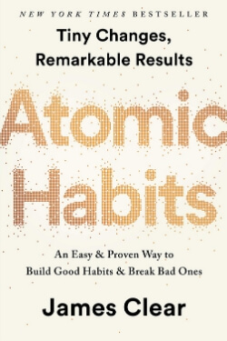

Library › Self-Improvement
Atomic Habits — Summary & Key Lessons

Tiny changes, remarkable results. Why you don't rise to your goals — you fall to your systems.
📖 OPEN THE FULL INTERACTIVE BREAKDOWN →🌐 Read it in Hindi, Hinglish, Gujarati, Tamil & 22 more languages — free, with audio.
💡 The Big Idea
You do not rise to the level of your goals — you fall to the level of your systems. Forget massive transformations. Master the art of tiny, repeatable improvements (atomic habits), stack them onto your identity, and let compounding do the heavy lifting. Every habit you build is a vote for the type of person you want to become.
🧠 The 8 Key Lessons
Lesson 1: The Power of 1% — Habits Compound
Chapter 1: The Surprising Power of Atomic Habits
Improving by just 1% daily makes you 37x better in a year; declining 1% daily takes you nearly to zero. Habits seem to make no difference day-to-day, which is why people quit — but their effects compound like interest. Breakthroughs are never sudden; they are the release of stored potential, like ice melting only after the room crosses 32°F.
📖 Example: British Cycling hired Dave Brailsford in 2003 and applied 'aggregation of marginal gains' — 1% improvements in everything from seat comfort to how riders washed their hands. Within 5 years, they dominated the Olympics, and British riders went on to win 5… Read the full example →
⚡ Do this: Stop asking 'What big change can I make?' Ask 'What tiny improvement can I repeat every day?' Then protect the streak.
Lesson 2: Identity First, Outcomes Later
Chapter 2: How Your Habits Shape Your Identity
There are 3 layers of change: outcomes (what you get), processes (what you do), and identity (what you believe). Most people work outside-in — 'I want to lose weight.' Lasting change works inside-out — 'I am a healthy person, so I train.' Every small action is a vote for a new identity; enough votes, and the belief becomes real.
📖 Example: Two people refuse a cigarette. One says 'No thanks, I'm trying to quit' (still identifies as a smoker). The other says 'No thanks, I'm not a smoker.' The second has changed identity — quitting is no longer a fight, it's just who they are. Read the full example →
⚡ Do this: Decide who you want to be, then prove it to yourself with small wins. Wrote one paragraph? You're a writer. Did 5 push-ups? You're an athlete.
Lesson 3: The Habit Loop: Cue → Craving → Response → Reward
Chapter 3: How to Build Better Habits in 4 Simple Steps
All habits run on the same 4-step loop. The cue triggers the brain, the craving supplies motivation, the response is the habit itself, and the reward closes the loop and teaches the brain to repeat it. From this loop come the Four Laws of Behavior Change: make it obvious, make it attractive, make it easy, make it satisfying. To break a bad habit, invert them: invisible, unattractive, hard, unsatisfying.
📖 Example: Phone buzzes (cue) → you crave finding out what the notification is (craving) → you grab the phone (response) → curiosity satisfied (reward). Repeat 200 times and picking up the phone becomes automatic — no buzz even required. Read the full example →
⚡ Do this: Pick one habit you want. Run it through the checklist: Is the cue obvious? Is it attractive? Is it easy? Is it satisfying? Fix whichever law is failing.
Lesson 4: Make It Obvious — Design Your Environment
Chapters 4–7: The 1st Law
Motivation is overrated; environment usually wins. Two power tools: implementation intentions ('I will [BEHAVIOR] at [TIME] in [LOCATION]') and habit stacking ('After [CURRENT HABIT], I will [NEW HABIT]'). Make cues for good habits visible and cues for bad habits invisible — self-control is a short-term strategy, not a long-term one.
📖 Example: Want to drink more water? Put a bottle on your desk, one in your bag, one by your bed. Want to stop doom-scrolling? Leave the phone in another room. People with 'high self-control' simply spend less time in tempting environments. Read the full example →
⚡ Do this: Write one sentence tonight: 'I will [habit] at [time] in [place].' Then place one physical cue where you can't miss it.
Lesson 5: Make It Attractive — Bundle Temptation
Chapters 8–10: The 2nd Law
Dopamine spikes in anticipation of reward, not just on receiving it — the craving drives the action. Use temptation bundling: pair an action you need to do with one you want to do. And exploit the social pull: we imitate the close (family/friends), the many (the tribe), and the powerful (high-status people). Join groups where your desired behavior is normal.
📖 Example: An engineering student rigged his exercise bike to Netflix — it only played while he pedaled at a certain speed. Watching shows (want) became the reward for cycling (need). He got fit watching his favorite series. Read the full example →
⚡ Do this: Formula: 'After [habit I need], I get [thing I love].' And join one community — gym group, book club, coding Discord — where your target habit is the default.
Lesson 6: Make It Easy — The 2-Minute Rule
Chapters 11–14: The 3rd Law
We naturally take the path of least effort, so reduce friction for good habits and add friction to bad ones. Start any new habit scaled down to 2 minutes: 'Read before bed' becomes 'read one page.' Master showing up first — a habit must be established before it can be improved. Motion (planning, researching) feels productive but only action produces results.
📖 Example: A man who lost over 100 pounds started by going to the gym for just 5 minutes at a time. He'd work out briefly and leave. It sounds useless — but he was becoming the type of person who goes to the gym every day. Only then did he optimize. Read the full example →
⚡ Do this: Shrink your habit until it takes under 2 minutes. Do only that for two weeks. Standardize before you optimize.
Lesson 7: Make It Satisfying — Never Miss Twice
Chapters 15–17: The 4th Law
The brain repeats what feels immediately rewarding — but good habits pay off late and bad ones pay off instantly. So attach a small immediate reward to good behavior, and track your habit visibly (a calendar of X's) so the streak itself becomes the reward. Golden rule for slip-ups: never miss twice. One miss is an accident; two is the start of a new (bad) habit.
📖 Example: Trent Dyrsmid, a rookie stockbroker, started each day with two jars and 120 paperclips. Every sales call, he moved one clip across. That visible progress kept him going — within 18 months he was bringing in $5 million for the firm. Read the full example →
⚡ Do this: Get a calendar. Mark an X every day you do your habit. If you break the chain, your only job is to show up tomorrow.
Lesson 8: Talent Is Overrated — Play the Right Game
Chapters 18–20: Advanced Tactics
Genes don't eliminate hard work; they clarify where to apply it. Pick habits and fields where your natural tendencies give you an edge — the game where the odds favor you. Stay motivated using the Goldilocks Rule: peak motivation comes from tasks right at the edge of your ability, ~4% beyond current skill. And beware the plateau of mastery: habits + deliberate practice = mastery, but never stop reviewing and reflecting.
📖 Example: Michael Phelps (long torso, short legs) is built for swimming; Hicham El Guerrouj (long legs, light frame) for distance running. Swap their sports and neither is elite. Same work ethic — different game. Read the full example →
⚡ Do this: Ask: What feels like fun to me but work to others? Where do I get results faster than average? Build your habits there.
✅ 5-Step Action Plan
- Write your identity statement: 'I am the type of person who ___.'
- Pick ONE keystone habit and shrink it to 2 minutes.
- Stack it: 'After [existing habit], I will [new habit].'
- Redesign one room so the cue is impossible to miss.
- Track it daily with X's — and never miss twice.
💬 Best Quotes from Atomic Habits
- “Every action you take is a vote for the type of person you wish to become.”
- “You should be far more concerned with your current trajectory than with your current results.”
- “Habits are the compound interest of self-improvement.”
Interactive version: mark lessons as read, listen in your language, share quote cards.